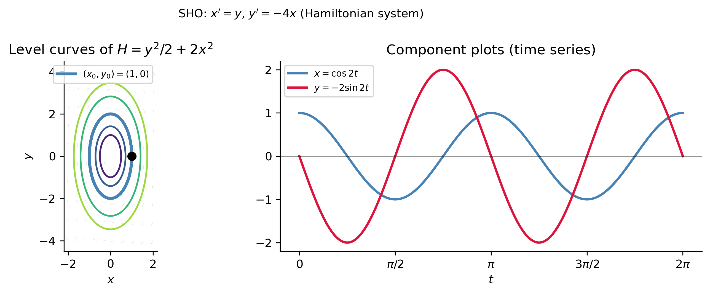

Linear Systems and Matrices
MATH 341 — Notes 9
University of Scranton
2026-06-07
Goals
What We Will Cover Today
Section 4.1 1. Second-order ODE \(\leftrightarrow\) planar first-order system 2. The Hamiltonian formulation of classical mechanics 3. The general companion system for \(n\)-th order ODEs 4. Phase plane, vector field, nullclines, orbits 5. Method of elimination; Wronskian; general solution
Section 4.2 6. \(2\times 2\) matrix arithmetic: \(+\), \(\times\), \(A^{-1}\), \(\det\) 7. Matrix form \(\mathbf{x}'=A\mathbf{x}\); equilibria; stability
Note
Sections 4.1 and 4.2 of Logan (2015).
From ODE to System
The Damped Oscillator as a System
The damped oscillator \(mx''+\gamma x'+kx=0\) with \(y=x'\):
\[\begin{cases}x'=y\\[4pt]y'=-\dfrac{k}{m}x-\dfrac{\gamma}{m}y\end{cases} \quad\Longleftrightarrow\quad \mathbf{x}' = A\mathbf{x}, \quad A=\begin{pmatrix}0&1\\-k/m&-\gamma/m\end{pmatrix}\]
Remark 4.1 (Logan)
We can always reduce \(ax''+bx'+cx=0\) to a first-order linear system by defining \(y=x'\).
Why do this? - Reveals geometrical structure (phase-plane orbits) hidden in the scalar equation. - The eigenvalues of the \(2\times 2\) matrix \(A\) are exactly the roots of the characteristic equation \(a\lambda^2+b\lambda+c=0\) from Notes 4. - Extends naturally to higher-dimensional systems.
The Hamiltonian Perspective
For a particle with position \(q\), momentum \(p=m\dot{q}\), and energy \(H(q,p) = p^2/(2m)+V(q)\):
\[\boxed{\dot{q} = \frac{\partial H}{\partial p} = \frac{p}{m}, \qquad \dot{p} = -\frac{\partial H}{\partial q} = -V'(q).}\]
Simple harmonic oscillator \(V(q)=\frac{1}{2}kq^2\), \(m=1\), \(k=4\), \((x,y)=(q,p)\): \[x' = y, \qquad y' = -4x. \quad \longrightarrow \quad \text{Example 4.3--4.4 of Logan!}\]
The Hamiltonian \(H = y^2/2 + 2x^2\) is conserved along every orbit: \[\frac{dH}{dt} = \frac{\partial H}{\partial x}x' + \frac{\partial H}{\partial y}y' = 4x\cdot y + y\cdot(-4x) = 0.\]
Orbits are level curves of \(H\) — ellipses \(y^2/2+2x^2=C\).
Tip
For the damped oscillator: \(dH/dt = -\gamma(x')^2 \leq 0\) — energy decreases, orbits spiral inward.
Hamiltonian Phase Plane
Phase Plane Concepts
Orbits, Vector Field, and Nullclines
Solution to \(x'=ax+by\), \(y'=cx+dy\): a pair of functions \(x(t)\), \(y(t)\).
Two views (Logan, Figure 4.4):
| View | What it shows |
|---|---|
| Component plot | \(x(t)\), \(y(t)\) vs. \(t\) — how states evolve in time |
| Phase-plane orbit | Parametric curve \((x(t),y(t))\) — shape of trajectory |
Vector field: \(\mathbf{F}(x,y) = (ax+by, cx+dy)\) — tangent direction at each point.
Nullclines (Logan, §4.1):
| Nullcline | Equation | Vector field direction |
|---|---|---|
| \(x\)-nullcline | \(ax+by=0\) | Vertical (\(x'=0\)) |
| \(y\)-nullcline | \(cx+dy=0\) | Horizontal (\(y'=0\)) |
Example 4.4 (Logan) — Verifying and Finding the Orbit
System: \(x'=y\), \(y'=-4x\). Claim: \(x(t)=\cos 2t\), \(y(t)=-2\sin 2t\) is a solution.
Verify: \(x'=-2\sin 2t = y\) ✓; \(y'=-4\cos 2t = -4x\) ✓.
Find the orbit (eliminate \(t\)): \[x^2 + \frac{1}{4}y^2 = \cos^2 2t + \sin^2 2t = 1. \quad\Longrightarrow\quad \text{Ellipse!}\]
Period \(\pi\); starts at \((1,0)\); winds clockwise.
Remark 4.5 — Zero Solution
\(\mathbf{x}(t)=\mathbf{0}\) always solves the linear system. In the phase plane it is the single point \((0,0)\) — the critical point (equilibrium solution).
Method of Elimination
Converting a System Back to a Single ODE
For \(x'=ax+by\), \(y'=cx+dy\): differentiate the first, substitute the second.
\[x'' = ax'+by' = ax'+b(cx+dy) = ax'+bcx+d(x'-ax).\]
Rearranging: \[\boxed{x'' - (a+d)x' + (ad-bc)x = 0} \tag{4.7}\]
Then \(y(t) = \dfrac{1}{b}(x'-ax)\) recovers \(y\). \(\tag{4.8}\)
Key observation: the coefficients of (4.7) are: \[-(a+d) = -\text{tr}(A), \qquad (ad-bc) = \det(A).\] The characteristic equation of (4.7) is exactly \(\lambda^2 - \text{tr}(A)\lambda + \det(A) = 0\).
Example 4.6 (Logan) — Elliptic Case
Solve: \(x'=y\), \(y'=-4x\).
\(x''=y'=-4x \Rightarrow x''+4x=0\). General solution: \(x=c_1\cos 2t+c_2\sin 2t\), \(y=x'=-2c_1\sin 2t+2c_2\cos 2t\).
\[\mathbf{x}(t) = c_1\begin{pmatrix}\cos 2t\\-2\sin 2t\end{pmatrix} + c_2\begin{pmatrix}\sin 2t\\2\cos 2t\end{pmatrix}\]
Wronskian: \(W = 2\cos^2 2t + 2\sin^2 2t = 2 \neq 0\) ✓ (fundamental set)
Example 4.12 (Logan) — Hyperbolic Case
Solve: \(x'=y\), \(y'=4x\) (positive sign!).
\(x''-4x=0 \Rightarrow x=c_1e^{2t}+c_2e^{-2t}\), \(y=2c_1e^{2t}-2c_2e^{-2t}\).
\[\mathbf{x}(t) = c_1\begin{pmatrix}e^{2t}\\2e^{2t}\end{pmatrix} + c_2\begin{pmatrix}e^{-2t}\\-2e^{-2t}\end{pmatrix}\]
IVP \(x(0)=0\), \(y(0)=1\): \(c_1=1/4\), \(c_2=-1/4\).
Key Theorems
Superposition, Uniqueness, General Solution
Theorem 4.8 — Superposition
If \(\mathbf{x}_1\), \(\mathbf{x}_2\) solve the system, then \(c_1\mathbf{x}_1+c_2\mathbf{x}_2\) is a solution.
Theorem 4.9 — Uniqueness
The IVP has a unique solution for all \(t\in(-\infty,\infty)\). Corollary: no two orbits in the phase plane can intersect.
Theorem 4.10 — General Solution
If \(\mathbf{x}_1\), \(\mathbf{x}_2\) form a fundamental set (\(W \neq 0\)), then \(\mathbf{x}=c_1\mathbf{x}_1+c_2\mathbf{x}_2\) is the general solution containing all solutions.
Wronskian: \(W(t) = \phi_1\psi_2 - \phi_2\psi_1 \neq 0\) \(\Longleftrightarrow\) linearly independent solutions.
The General Companion System
Reducing \(n\)-th Order ODEs
For \(x^{(n)} + p_{n-1}x^{(n-1)} + \cdots + p_0 x = 0\), let \(x_1=x\), \(x_2=x'\), …, \(x_n=x^{(n-1)}\):
\[\mathbf{x}' = A\mathbf{x}, \quad A = \begin{pmatrix}0&1&0&\cdots&0\\0&0&1&\cdots&0\\\vdots&&&\ddots&\vdots\\0&0&0&\cdots&1\\-p_0&-p_1&\cdots&&-p_{n-1}\end{pmatrix}\]
The characteristic polynomial of \(A\) is \(\lambda^n+p_{n-1}\lambda^{n-1}+\cdots+p_0=0\) — the same as the original ODE’s characteristic equation.
Char poly: lambda**2 + 3*lambda + 2
Char poly: lambda**3 + 2*lambda**2 - lambda + 3Section 4.2: Matrices
Notation and Basic Operations
\[A = \begin{pmatrix}a_{11}&a_{12}\\a_{21}&a_{22}\end{pmatrix}, \quad \mathbf{x} = \begin{pmatrix}x_1\\x_2\end{pmatrix} = (x_1,x_2)^T\]
Matrices: uppercase. Vectors: lowercase boldface.
Addition (entrywise): \((A+B)_{ij}=a_{ij}+b_{ij}\).
Scalar multiplication: \((cA)_{ij}=ca_{ij}\).
Matrix product (row \(\cdot\) column): \[(AB)_{ij} = a_{i1}b_{1j}+a_{i2}b_{2j}.\]
Important
\(AB \neq BA\) in general — multiplication is not commutative.
Matrix-vector product: \(A\mathbf{x} = \bigl(\begin{smallmatrix}ax+by\\cx+dy\end{smallmatrix}\bigr)\)
Examples 4.16 and 4.17 (Logan)
A = sym.Matrix([[1,2],[3,-4]]); B = sym.Matrix([[0,-2],[7,-4]])
x_v = sym.Matrix([-4,6]); y_v = sym.Matrix([5,1])
print("A+B =", (A+B).tolist())
print("-3B =", (-3*B).tolist())
print("x+2y =", (x_v+2*y_v).T.tolist())
A2 = sym.Matrix([[2,3],[-1,0]]); B2 = sym.Matrix([[1,4],[5,2]])
print("\nAB =", (A2*B2).tolist())
print("A^2 =", (A2**2).tolist())A+B = [[1, 0], [10, -8]]
-3B = [[0, 6], [-21, 12]]
x+2y = [[6, 8]]
AB = [[17, 14], [-1, -4]]
A^2 = [[1, 6], [-2, -3]]Determinant, Inverse, Theorem 4.19
\[\det A = \det\begin{pmatrix}a&b\\c&d\end{pmatrix} = ad - bc\]
If \(\det A \neq 0\): \[A^{-1} = \frac{1}{\det A}\begin{pmatrix}d&-b\\-c&a\end{pmatrix} \tag{4.17}\]
Recipe: swap diagonal, negate off-diagonal, divide by \(\det A\).
Theorem 4.19
- \(\det A \neq 0\) \(\Rightarrow\) \(A\mathbf{x}=\mathbf{b}\) has unique solution \(\mathbf{x}=A^{-1}\mathbf{b}\).
- \(\det A = 0\) \(\Rightarrow\) \(A\mathbf{x}=\mathbf{0}\) has infinitely many solutions.
Cramer’s Rule (Theorem 4.21) and Example 4.22
Theorem 4.21 — Cramer’s Rule
\[x_1 = \frac{\det\bigl[\mathbf{b}\ |\ \mathbf{a}_2\bigr]}{\det A}, \qquad x_2 = \frac{\det\bigl[\mathbf{a}_1\ |\ \mathbf{b}\bigr]}{\det A}.\] Replace column \(j\) with \(\mathbf{b}\); divide by \(\det A\).
Example 4.22: \(2x-3y=4\), \(4x-y=-1\).
\(\det A = 2(-1)-4(-3) = 10\).
\[x = \frac{\det\bigl[\begin{smallmatrix}4&-3\\-1&-1\end{smallmatrix}\bigr]}{10} = \frac{-7}{10}, \qquad y = \frac{\det\bigl[\begin{smallmatrix}2&4\\4&-1\end{smallmatrix}\bigr]}{10} = \frac{-18}{10}.\]
The Matrix ODE \(\mathbf{x}'=A\mathbf{x}\)
Compact Form and Equilibria
\[\mathbf{x}'(t) = A\mathbf{x}(t), \quad A=\begin{pmatrix}a&b\\c&d\end{pmatrix}, \quad \mathbf{x}=\begin{pmatrix}x\\y\end{pmatrix}. \tag{4.22}\]
Autonomous: right side does not depend explicitly on \(t\).
Equilibrium \(\mathbf{x}^*\): constant solution satisfying \(A\mathbf{x}^*=\mathbf{0}\).
Theorem 4.23
- \(\det A \neq 0\): unique isolated equilibrium at \((0,0)\).
- \(\det A = 0\): a line of equilibria through the origin.
Remark 4.24 (Nonhomogeneous): For \(\mathbf{x}'=A\mathbf{x}+\mathbf{b}\): \[\mathbf{x}^* = -A^{-1}\mathbf{b}. \tag{4.24}\] Let \(\mathbf{y}=\mathbf{x}-\mathbf{x}^*\); then \(\mathbf{y}'=A\mathbf{y}\) — reduces to homogeneous case.
Stability Vocabulary (Definition 4.25)
| Name | Condition | Phase-plane picture |
|---|---|---|
| Asymptotically stable (sink/attractor) | Orbits \(\to (0,0)\) as \(t\to+\infty\) | Spiraling or converging to origin |
| Stable (center/neutrally stable) | Orbits stay bounded near \((0,0)\) | Closed curves around origin |
| Unstable (source/repeller) | Some orbits escape | Spiraling out or diverging |
Tip
In Section 4.3 we will see exactly how the eigenvalues of \(A\) determine which case occurs — the trace \(\text{tr}(A)\) and \(\det(A)\) classify the stability completely.
Summary
Key Takeaways
A second-order ODE \(ax''+bx'+cx=0\) becomes the planar system \(\mathbf{x}'=A\mathbf{x}\) with companion matrix \(A=\bigl[\begin{smallmatrix}0&1\\-c/a&-b/a\end{smallmatrix}\bigr]\). The eigenvalues of \(A\) are the roots of the ODE characteristic equation.
Hamiltonian mechanics produces \((\dot{q},\dot{p}) = (\partial H/\partial p, -\partial H/\partial q)\) — a first-order system. The SHO’s orbits are level curves of \(H\).
An \(n\)-th order ODE reduces to the companion \(n\)-dimensional system; the characteristic polynomial is unchanged.
The phase plane visualizes solution curves (orbits); the vector field, nullclines, and the sign analysis of \(x'\), \(y'\) in each quadrant reveal the orbit structure without solving.
Elimination (§4.1) converts the system back to a second-order ODE (4.7); the Wronskian tests linear independence.
Matrix facts (§4.2): \(\det A\neq 0 \Leftrightarrow\) invertible \(\Leftrightarrow\) unique solution; inverse formula (4.17); Cramer’s rule.
Equilibria: \(A\mathbf{x}^*=\mathbf{0}\) for homogeneous; \(\mathbf{x}^*=-A^{-1}\mathbf{b}\) for nonhomogeneous. Stability depends on eigenvalues (Section 4.3).
References
Logan, J David. 2015. A First Course in Differential Equations, Third Edition.

MATH 341 Differential Equations — Notes 9